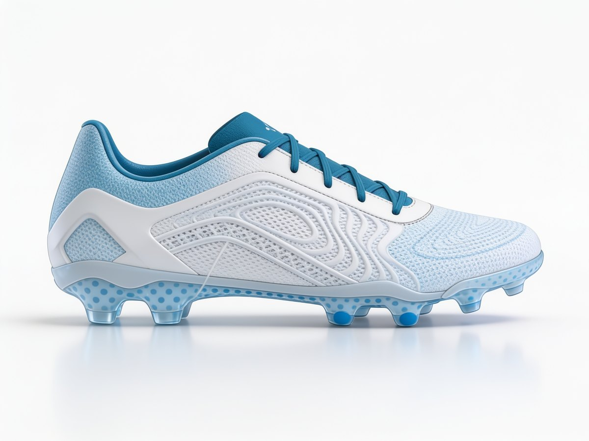

Sinetik builds the everyday tools of performance work: a bar-velocity sensor, a platform that brings your data together, individual coaching, and a boot that respects the foot. Built by someone who spent years without them.
Part of what we build is for organisations. The rest is for the people who train. Those are not the same needs, and we do not pretend otherwise.
Measure where the training happens, bring the data into one place, decide with your staff.
Understand how you work, train inside the week you actually have, and be equipped without constraining your foot.
Bar velocity measured on every repetition, right next to the rack. You know when the set is still paying off, and when it has stopped.
Planning, load, wellness, testing, injuries and return to play, brought together in an environment configured for your organisation.
Individual physical preparation, built around the week you actually have — not around a template.
A wide forefoot, a heel that holds, European manufacturing. First model: Onda FG-01.

A sensor on the wrist, the app on the iPhone. Tracker measures the velocity of every repetition, places it in the intended training zone, and flags the moment the set stops delivering what it was meant to. In the weight room, without interrupting the session.
Studio brings together what lives today in your files and your apps — GPS, testing, questionnaires, medical, programming. Configured for your organisation, not a generic template you have to adapt to.
We start by looking at how you move and how your week is actually built. The plan comes after — and it adjusts when the week changes.
A wide forefoot that lets the toes spread, a heel that genuinely holds, European manufacturing. First model: Onda FG-01, firm ground.
Write to us to follow the launch, ask a question, or tell us what you are missing today. Every message is read.